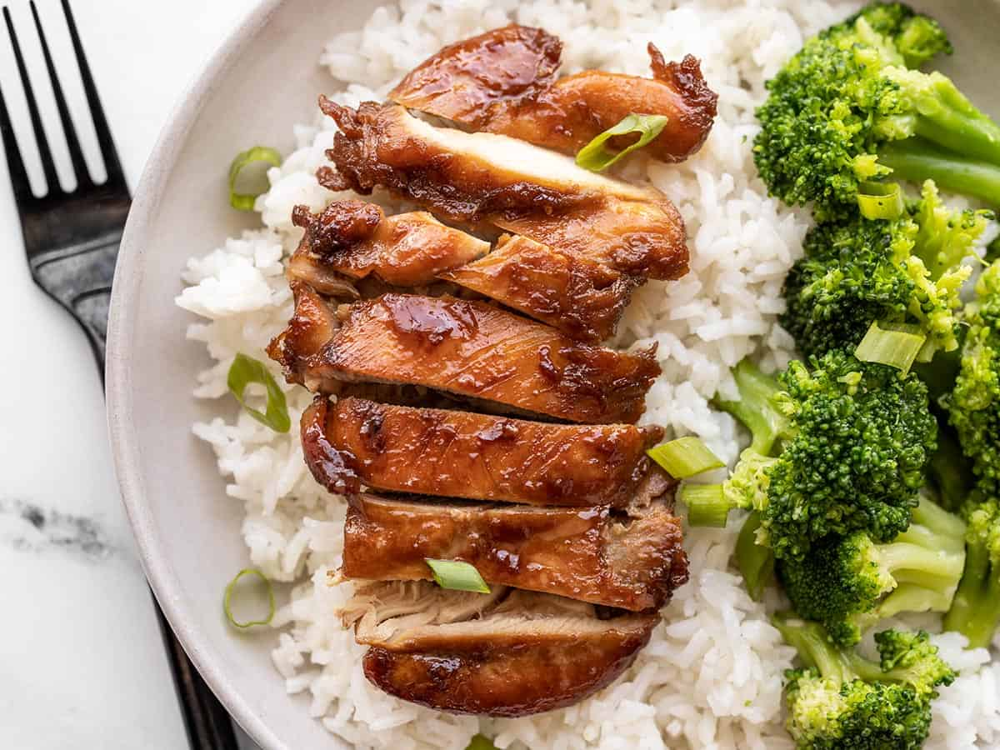

Chicken Teriyaki Recipe

Servings: 4 | Prep Time: 15 mins | Cook Time: 20 mins | Total Time: 35 mins
Chicken Teriyaki is a popular Japanese dish that is both simple and delicious. It features tender pieces of chicken that are broiled or grilled and then coated in a glossy, flavorful teriyaki sauce. This recipe captures the essence of traditional Japanese cooking techniques, resulting in a dish that's perfectly balanced in flavor. Serve it over a bed of steamed rice with some steamed vegetables for a complete meal that's sure to impress.
Ingredients
- 4 boneless, skinless chicken thighs
- Salt and pepper, to taste
- 1 tablespoon vegetable oil
- 1/4 cup soy sauce
- 1/4 cup mirin (Japanese sweet rice wine)
- 2 tablespoons sugar
- 1 clove garlic, minced
- 1 teaspoon grated fresh ginger
- 1 tablespoon cornstarch dissolved in 2 tablespoons water
- Sesame seeds and sliced green onions for garnish
Steps
- Season the chicken thighs with salt and pepper on both sides.
- Heat the vegetable oil in a large skillet over medium-high heat. Add the chicken thighs and cook until browned on both sides and cooked through, about 5-7 minutes per side. Remove chicken from skillet and set aside.
- In the same skillet, add the soy sauce, mirin, sugar, garlic, and ginger. Bring to a simmer over medium heat, stirring until the sugar is dissolved.
- Add the cornstarch mixture to the skillet and stir until the sauce thickens, about 2 minutes.
- Return the chicken to the skillet and coat with the teriyaki sauce. Cook for an additional 2-3 minutes, until the chicken is glazed and heated through.
- Slice the chicken and serve over steamed rice, garnished with sesame seeds and sliced green onions.